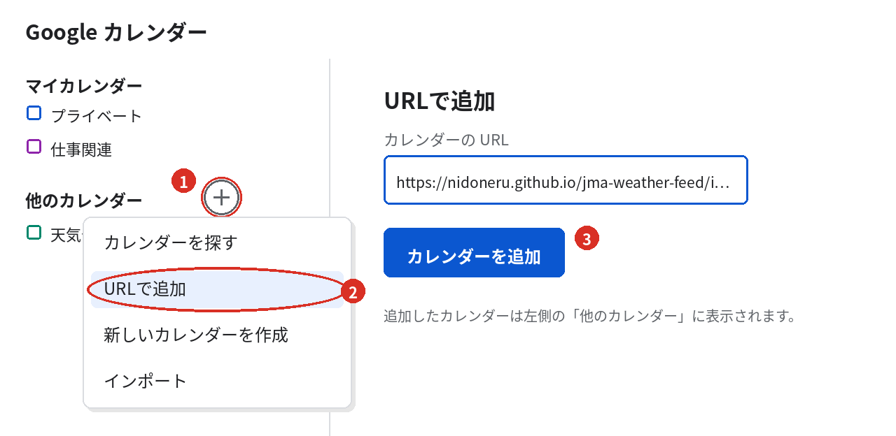

天気予報フィード
気象庁が発表する天気予報を、一次細分区域（全国142地点）ごとに iCal・RSS・JSON で配布しています。短期予報（今日〜明後日）と週間予報を統合した7日分です（表示は短期優先）。
更新日時
2026年11月29日 2時11分
各フィード（iCal・RSS・JSON）の末尾にも、同じ更新日時が入っています。
表示例（東京地方）
晴れ 9℃｜-2℃ 0%
天気：晴れ 降水確率：0-6時 0%｜6-12時 0%｜12-18時 0%｜18-24時 0% 風：北西の風 ２３区西部 では 北西の風 やや強く 気温：東京 最高9℃ 最低-2℃ 出典：気象庁の天気予報データを加工して作成 更新：2026年1月23日 4時56分
カレンダーへの登録（Google カレンダー）
- 下の「地点一覧」で、自分の地域の「iCal」の URL をコピーします
- Google カレンダーの画面左側にある「他のカレンダー」の「＋」から「URLで追加」を選んで登録します
- Google 側との同期が終了すると、スマホ側のカレンダーにも自動で表示されます

- URLの登録は、パソコンのブラウザからのみ行えます。スマホの Google カレンダーアプリからは登録できません
スマホしかない場合は、ブラウザで PC 版サイトを表示すれば同じ画面で登録できます。
- Chrome（Android）：右上の「︙」メニューから「PC版サイト」にチェック
- Chrome（iPhone）：画面右下の「…」メニューから「PC版サイトを見る」
- Safari（iPhone）：画面左下のボタンをタップし、右下の「…」から「デスクトップ用Webサイトを表示」
表示が小さくて操作しづらいですが、ピンチアウトで拡大表示するなどして登録してください。
webcal のリンクは、対応アプリで開くとそのまま購読登録に進みます。iPhone のカレンダーは「照会カレンダーを追加」、Mac のカレンダーは「新規照会カレンダー」から、URL を入力して登録することもできます。
RSS リーダーへの登録
- 1地点だけなら、その地点の「RSS」リンクをリーダーに登録します
- まとめて登録するなら、OPML ファイルをリーダーに読み込ませます（予報区ごとのフォルダで入ります）
出典と免責
気象庁の天気予報データを加工して作成しています。データは気象庁ホームページで発表されたものです。
このサイトは、個人が運営する非公式なものです。予報の正確性は保証しません。防災など重要な判断には、必ず気象庁の公式情報を確認してください。
地点一覧
北海道
宗谷、上川・留萌、網走・北見・紋別、十勝、釧路・根室、胆振・日高、石狩・空知・後志、渡島・檜山
北海道
宗谷地方
上川・留萌地方
網走・北見・紋別地方
十勝地方
釧路・根室地方
胆振・日高地方
石狩・空知・後志地方
渡島・檜山地方
東北
青森県
岩手県
宮城県
秋田県
山形県
福島県
関東・甲信越
茨城県
栃木県
群馬県
埼玉県
千葉県
東京都
神奈川県
新潟県
山梨県
長野県
東海・北陸
富山県
石川県
福井県
岐阜県
静岡県
愛知県
三重県
関西
滋賀県
京都府
大阪府
兵庫県
奈良県
和歌山県
中国
鳥取県
島根県
岡山県
広島県
山口県
四国
徳島県
香川県
愛媛県
高知県
九州・沖縄
福岡県
佐賀県
長崎県
熊本県
大分県
宮崎県
鹿児島県（奄美地方除く）
奄美地方
沖縄本島地方
大東島地方
宮古島地方
八重山地方
お問い合わせ
- フォーム：Google フォーム
- メール：
- GitHub Issues
個人で運営しているため、返信にお時間をいただく場合があります。
用語解説
iCal：カレンダーアプリで予定をやり取りするための形式。このサイトでは天気予報を予定の形で配布していて、URL を登録するとカレンダーに予報が表示される。
webcal：iCal の URL をカレンダーアプリで直接開くための、リンクの形式。押すと対応アプリが起動して、購読登録に進む。中身は iCal と同じ。
RSS：Really Simple Syndication の略。サイトの更新内容を配信するための形式で、このサイトでは予報を記事の形で配信している。RSS リーダーに登録すると更新分が届く。
OPML：Outline Processor Markup Language の略。RSS フィードの一覧をまとめて受け渡すための形式で、このサイトでは全地点の RSS を予報区ごとのフォルダに分けて1ファイルにまとめている。RSS リーダーに読み込ませると、全地点を一度に登録できる。
JSON：JavaScript Object Notation の略。プログラムがデータを読み取るための形式で、このサイトでは天気・気温・降水確率などをそのまま配布している。アプリや AI などに取り込める。
参考リンク（気象庁）
- 週間天気予報：全国の予報の一覧表
- 2週間気温予報と早期天候情報：2週間先までの気温の見通しと、著しい高温・低温の見通しを解説
- 予報用語：「時々」「一時」など、天気予報で使う言葉の意味を解説
- 気象庁情報カタログ：気象庁が配信しているデータの一覧
- 防災情報XMLの技術資料：気象庁が配信するXML電文の仕様資料